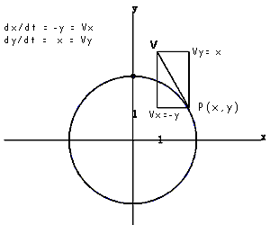

The figure shows Point P travelling on x-y plane. The velocity V is determined by its location (x,y).Now Vx = -y and Vy = x that the orbit of P is an circle.
When the velocity of a point is determined by its location as
dx/dt = f(x,y) the system is called an autonomous system.
Grasp the concept while trying other examples. |
 |